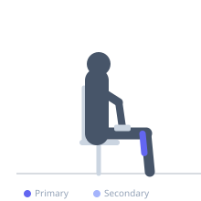

Exercise guide / Seated Soleus Raise with Pause
Seated Soleus Raise with Pause
A seated calf raise performed with a deliberate pause at the top of the movement (maximum plantarflexion), increasing time-under-tension for the soleus muscle. Because the seated position with bent knees isolates the soleus from the gastrocnemius, this exercise is particularly effective for Achilles tendinopathy rehabilitation at the soleus-tendon junction, distal Achilles insertional issues, and plantar fasciitis programs. The pause amplifies the therapeutic loading stimulus at the top.
Primary muscles
soleus
Secondary muscles
gastrocnemius medial
Equipment
Dumbbell (Fixed)


Starting position
- Sit on a bench or chair with knees bent at approximately 90 degrees. Place a dumbbell or weight plate on the thighs just above the knees. Position the balls of the feet on the edge of a small block or plate for full range.
Setup
- The key setup requirement is a 90-degree (or greater) knee angle, which disables the gastrocnemius and isolates the soleus. Use a step or block under the forefeet for maximum range.
Steps
- Step 1: Begin with heels lowered below the forefeet for the full stretch position.
- Step 2: Press through the balls of the feet to rise to the full plantarflexed (tiptoe) position.
- Step 3: PAUSE at the top for 2-3 seconds, maintaining maximum plantarflexion and squeezing the soleus.
- Step 4: Lower slowly (3-4 seconds) back to the full stretch. Repeat.
Coaching cues
- Feel the deep calf (soleus) hold the pause at the top — not the gastrocnemius (which is inactive at 90-degree knee angle)
- Squeeze the calf hard during the pause
- Let the heel drop for the full stretch — feel the tension through the lower calf and Achilles
Breathing
- Exhale as you rise. Breathe during the top pause. Inhale slowly as you lower.
Range of motion
- Full dorsiflexion to full plantarflexion. The pause occurs at maximum plantarflexion.
Tempo
- 2s raise, 3s pause at top, 3s slow eccentric lower
Common mistakes
- Skipping the pause — the pause is what differentiates this from a standard seated calf raise
- Partial range at the top — rise to true maximum plantarflexion
- Rushing the eccentric — 3-4 second lowering is prescribed
Safety
- For insertional Achilles tendinopathy, do not let the heel drop below the level of the forefoot — this can aggravate the insertion
- For mid-portion tendinopathy, full range is typically better tolerated and therapeutically indicated
Training
- strength: 8–15 reps
- endurance: 12–20 reps
- strength: 2–3 sets
- endurance: 2–4 sets
- Rest: {'strength': 90, 'endurance': 60}